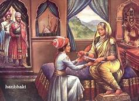

 Rajmata Jijau Rajmata Jijau, the mother of Shivaji, the Maratha king, was a feminist who believed in doing the right thing, no matter what the circumstances. Recently we had the birth anniversary of Jijabai Bhosale, commonly (and fondly) known as Jijau or Rajmata Jijau (on 12th of January). Most of us know of her as the mother of Shivaji – The founder of Maratha empire. I would rather like the world to know Jijau as – ‘The Mother who nurtured her son to be Shivaji – the founder of Maratha empire’. This is because Jijau’s contribution in the making of Shivaji was enormous. We really owe the Hindavi Swarajya to Jijau because without her upbringing and the values she inculcated into her child, we could not have got a king, a warrior like Shivaji.
Shahajiraje Bhosale Shahaji was that the son of Maloji Bhosale, who was the famous Maratha warrior. He was born in 1594 or in 1602 and expired on January 23, 1664 AD. Bhosale participated in several wars in favor of Nizam Shah of Ahmednagar. So that he awarded Jagir of Pune and Supe districts. Maloji as a Hindu, Fantastic devotee of Sufi Muslim pir Shah Sharif. He telephoned his sons Shahaji and Sharifji to honor the pir. His mother was the daughter of Lakhuji Jadhav, the another famous Maratha general.
Sambhajiraje Bhosale Pride son of Bharat and Chatrapati Shivaji Maharaj. He is known as the second Chhatrapati of the Great Maratha empire, who ruled like a lion from 1681-1689.He was born on 14th may 1657 at purandar fort, near pune, India. He was born to Chhatrapati Shivaji Maharaj and his First wife Saibai. After the sad demise of his mother Saibai, when he was just two years old, Jijabai, mother of Shivaji Maharaj raised him with the same valour and courage that she gave to Shivaji Maharaj.Along with Sanskrit, Sambhaji Bhosale learnt 13 languages. He learned a Portuguese, which helped him to fight against Portuguese colonizers in Goa.